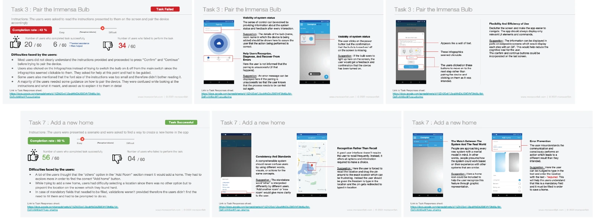
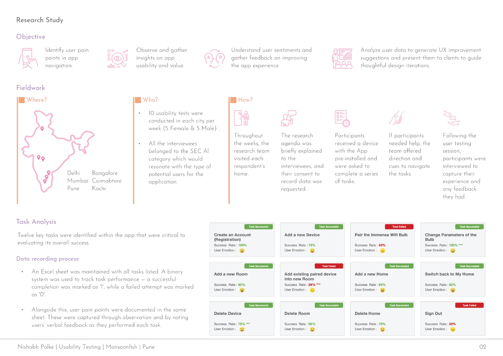
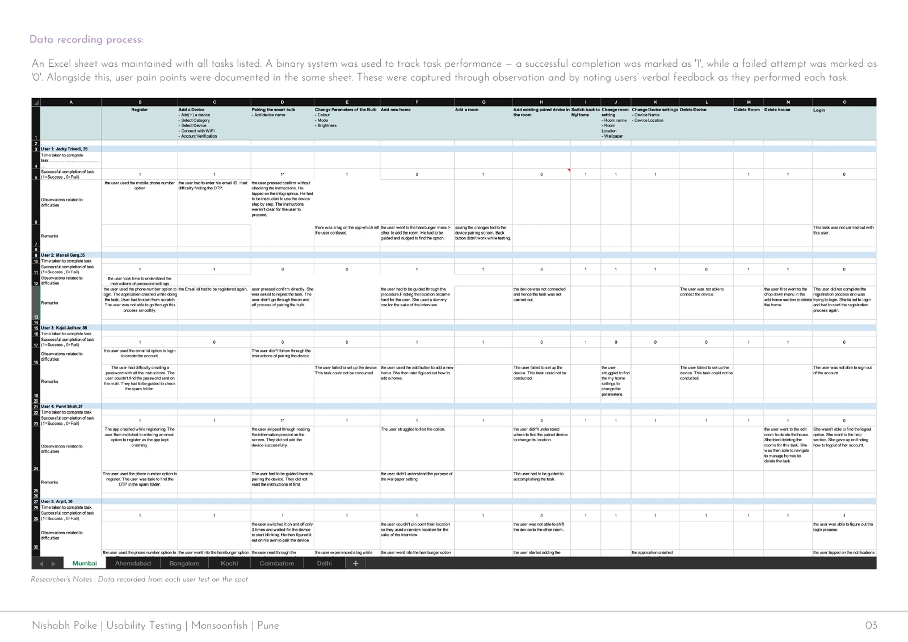
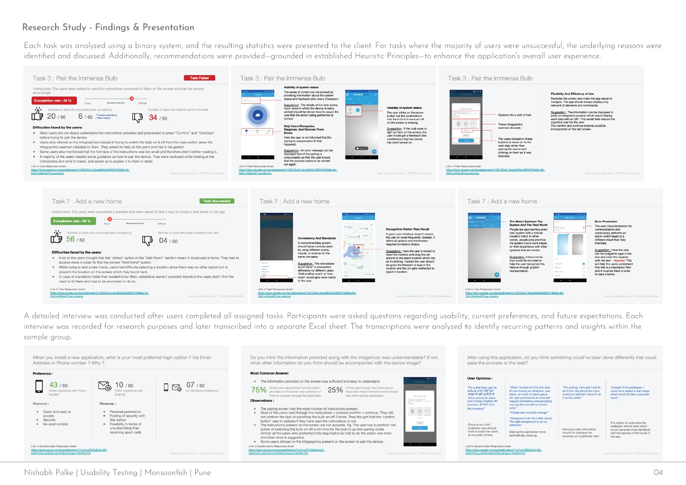
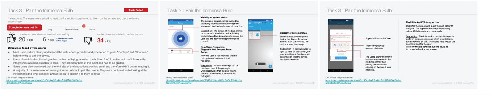
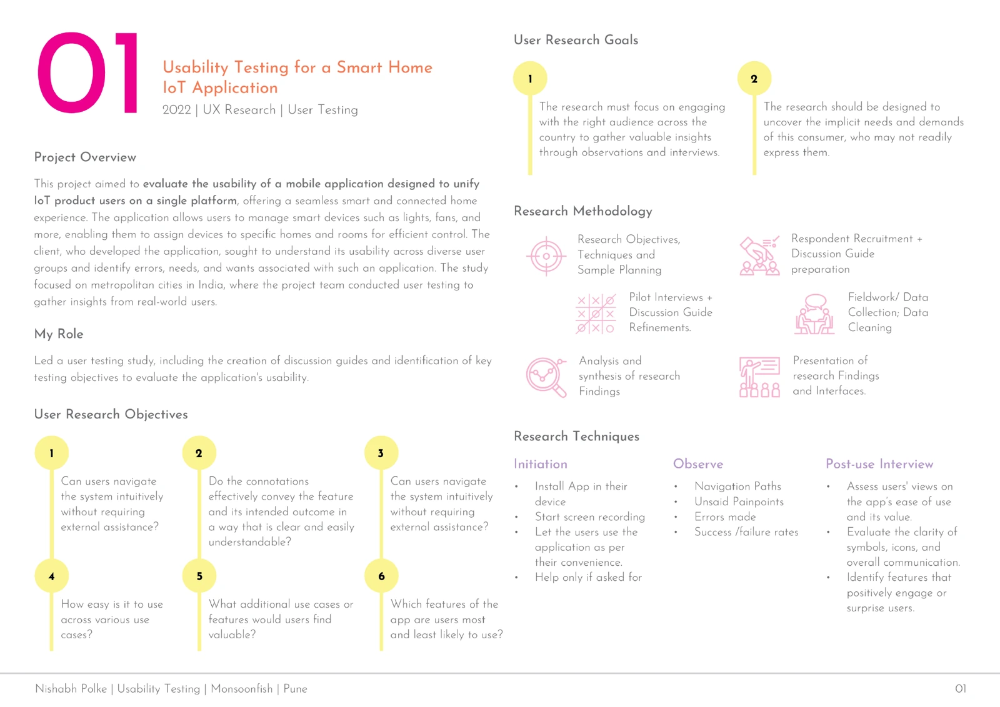

Finding the friction in a connected home.
In-home usability research on an app for controlling connected devices, rooms, and homes.
- Project
- Smart-home usability
- My role
- User-testing study lead
- Context
- Monsoonfish
- Year
- 2022

The context
The application brought control of IoT devices into one mobile interface. People could manage devices such as lights and fans, assign them to rooms, and organize multiple homes.
The client wanted to understand how people navigated the application and where its language, setup, or interaction design caused difficulty. Testing took place in six Indian cities.
My contribution
I led the user-testing study, created discussion guides, and defined the testing objectives. The team conducted visits, observation, and interviews with potential users.
In-home testing · Task analysis · Interviews
Follow the research.
From the original project documentation
Test at home
Observe twelve everyday tasks in the participant’s own setting.

Capture the difficulty
Record completion, observed problems and verbal feedback together.

Explain the recommendation
Connect each design suggestion to the task evidence behind it.


The approach
Test in the home
The research team visited participants at home. After explaining the study and obtaining consent, we provided a device with the app installed and observed a series of tasks.
Record performance and the reason behind it
Twelve tasks covered account setup, device pairing, rooms, homes, deletion, and sign-out. The team recorded task success alongside observed pain points and verbal feedback in a shared spreadsheet.
Follow up with interviews
After the tasks, participants discussed usability, preferences, and expectations. Recorded interviews were transcribed and analyzed for recurring patterns. Findings and recommendations were presented task by task.

What to noticeThe twelve tasks span setup, pairing, room and home management, deletion and sign-out. The study looked at the whole management flow.

What to noticeEach task was recorded alongside observations. A completed task could still reveal confusion or a difficult path.
What the research revealed
Some people treated pairing instructions as controls.
Device pairing needed clearer guidance
Pairing a bulb was one of the difficult tasks. The report describes people missing instructions, treating illustrations as interactive steps, and needing clearer confirmation of pairing progress.
Moving devices between rooms was difficult to discover
The existing-device-to-new-room task had low completion in the report. The study made this less visible management flow a concrete area for design attention.
Even a completed task could contain friction
Participants could complete adding a home while still struggling to find the relevant option or understand location suggestions. Task success alone did not explain the experience.



What to noticeThe report pairs the task result with annotated screens and recommendations. Bulb pairing exposed problems with instructions and system feedback.
The outcome
The deliverables combined task-level results, observed difficulties, interview themes, and recommendations grounded in usability heuristics. The recommendations addressed system feedback, instructions, terminology, and error recovery.
The portfolio documents research and recommendations, rather than a shipped redesign or measured improvement after release.
Download the UX portfolioOpen the research archive.
4 original portfolio pagesSee the full documentation behind this case study. Every image can be enlarged, and the source files are available to download.
View all 4 research artifacts

